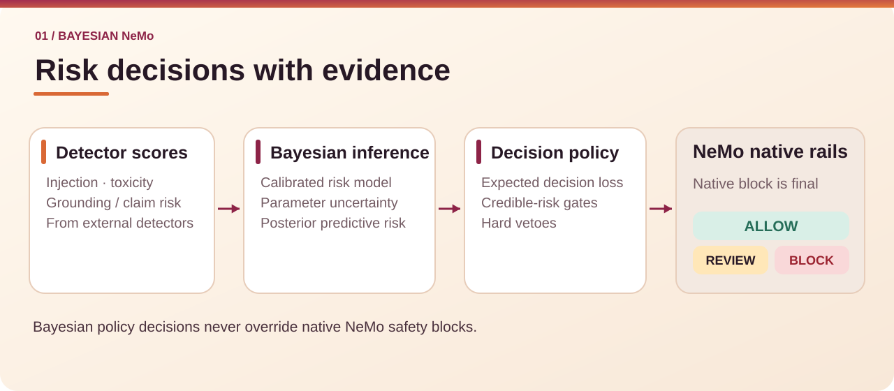
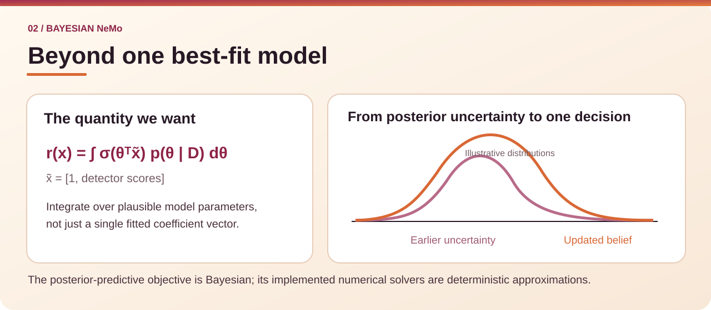
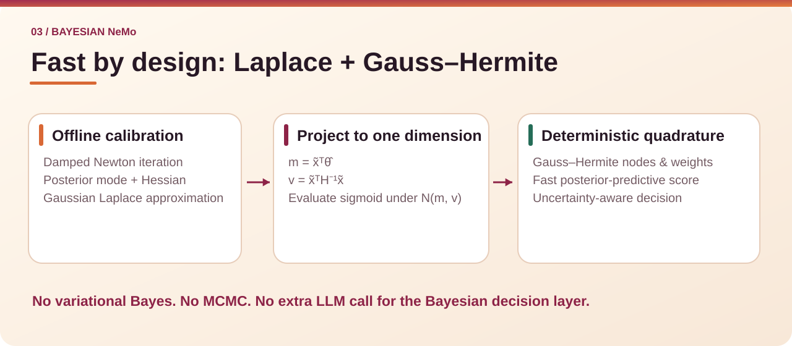
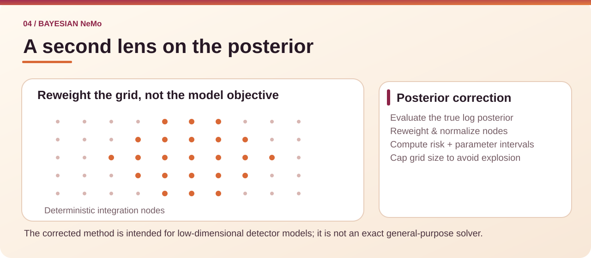
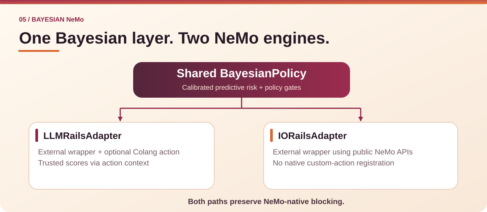
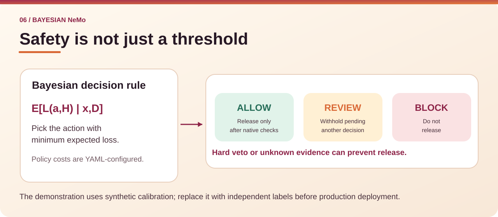

Guardrails that account for uncertainty.
Your detectors see risk. Bayesian NeMo weighs that evidence, carries uncertainty into the decision, and helps choose when to allow, review, or block. Transparent by design. Lightweight on CPU.
Separate decision layer · Not a fork · Supports LLMRails + IORails · No additional LLM calls for Bayesian inference
From evidence to action.
Without losing the nuance.
Plug into your existing detector pipeline. The Bayesian layer estimates risk and returns an auditable decision; the upstream NeMo rails remain in control of their own blocks.

Risk with context
Posterior-predictive estimates and parameter-risk intervals give policy decisions more context than a lone detector threshold.
Hard guardrails stay hard
Native NeMo blocks always prevail. Missing or malformed detector scores do not authorize release.
Don't bet everything
on one fitted model.
The target is posterior-predictive risk: a weighted average over plausible model parameters. The shipped numerical backends approximate that integral deterministically.

Laplace.
Fast enough for the guardrail path.
Fit a local Gaussian approximation offline, then project the risk calculation to one dimension. Gauss–Hermite quadrature does the runtime integration—without launching a sampling chain.

laplace in BayesianLogisticModel.Go beyond the Gaussian
when the dimension allows.
Posterior-corrected quadrature evaluates the actual unnormalized non-Gaussian posterior on a deterministic grid, then reweights its nodes. It provides a second integration strategy for small detector models.

Posterior correction
Correcting Laplace-centered quadrature weights moves the integration beyond a purely Gaussian posterior approximation.
A guarded computational budget
Tensor quadrature is deliberately limited to low-dimensional models; the package rejects excessive grids.
One Bayesian engine.
Both generations of NeMo.
Reuse the same BayesianPolicy with either NeMo engine. The integration paths differ because NVIDIA's engines expose different capabilities.

LLMRails
Python wrapper plus optional native Colang action, using trusted detector scores passed through action context.
IORails
Explicit require_iorails=True, using the public asynchronous checking and generation interfaces.
Every decision
has a reason.
Expected losses, optional credible-risk gates, and explicit hard vetoes produce the decision. The API returns the underlying risk estimate and decision rationale.

r(x) = ∫ σ([1,x]ᵀθ) · p(θ | D) dθClone. Configure.
Evaluate.
Run the included examples or deploy the lightweight API. It accepts normalized detector scores and returns Bayesian risk, an interval, action losses, and the final policy decision.
Python CLI
pip install -e '.[api,test]'
bayesian-nemo evaluate \
--config examples/policy.yaml \
--phase input \
--scores '{"injection_risk":0.02,"toxicity_risk":0.02}'Or run the actual NeMo integrations via examples/legacy_colang/run_local.py and examples/iorails/run_local.py.
REST API
uvicorn bayesian_nemo.api:app \
--host 0.0.0.0 --port 8000
curl http://localhost:8000/evaluate \
-H 'Content-Type: application/json' \
-d '{"phase":"input", "scores":{"injection_risk":0.02,"toxicity_risk":0.02}}'Actual endpoints: GET /health, GET /config, and POST /evaluate.
See what Bayesian guardrails
can add to NeMo.
Explore two deterministic posterior-integration strategies, compare their decisions, and adapt the code to your own detectors and calibration data.